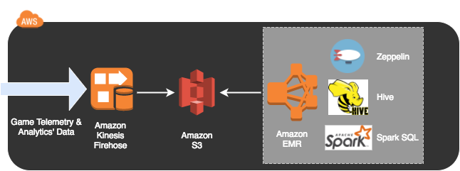

GAM310
Telemetry & Analytics’ Pipelines for Game Balancing
Lab 4 - Big Data Analytics
Lab 4 - Big Data Analytics
You've now configured 3 different data pipelines. Now we will build your last pipeline using Amazon Elastic MapReduce (EMR) for this workshop, which is the most appropriate solution for processing Big Data sets.
The data pipeline architecture for this lab is shown in the following diagram:

For this lab we're going to use the web console to use Amazon Elastic MapReduce (EMR). Visit the Amazon EMR page at this link. Please follow these instructions:
1. From the "Clusters" on the left, click the "Create Cluster" button
2. Click the "Go to Advanced Options" link there, next to the page title
3. Choose "Release": "emr-5.10.0" in the Software Configuration
4. Enable "Hadoop 2.7.3", "Presto 0.187", "Pig 0.17.0", "Hue 4.0.1", "Zeppelin 0.7.3", "Hive 2.3.1", "Spark 2.2.0". You can choose to enable others there, however we will use these primarily for the guided section of the workshop.
5. Enable all the "AWS Glue Data Catalog settings" - "Use for Hive table metadata", "Use for Presto table metadata" and "Use for Spark table metadata"
6. Click on the Next button to proceed to the Hardware configuration
7. Choose the VPC you have been using for the workshop from the "Network" dropdown. Choose any one subnet for the EC2 Subnet dropdown.
8. Review and verify the configuration - It should have an Instance count of 1 for Master Node type, Instance count of 2 for Core Node types and Instance count of 0 for Task Node types. Change the Instance count for Task Node types to 1.
9. Click the Next button to proceed to the General Cluster Settings.
10. Provide the "Cluster Name" as "workshopEMRCluster"
11.
You've created a lot of things in your account! Let's clean them up so you don't keep paying for them.
Please replace ${WorkshopBucket} below with your "WorkshopBucket" Output from your CloudFormation Stack.